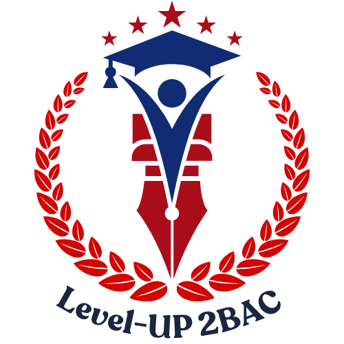

In almost every family, parents and their teenage children see the world differently. This difference in attitudes, values, and habits between generations is commonly known as the "generation gap." Today, the gap seems wider than ever because of the rapid pace of technological change. Many parents grew up without smartphones, social media, or the internet, so they sometimes struggle to understand why their children spend hours online. Teenagers, on the other hand, have never known a world without these technologies, and they see them as a normal part of daily life. One major source of conflict is communication style. Older generations often prefer face-to-face conversations or phone calls, while younger people favor text messages and social media chats. As a result, parents sometimes feel ignored when their children reply with short messages instead of talking directly. Another area of disagreement involves career choices. In the past, many parents expected their children to follow traditional, stable professions such as medicine, engineering, or teaching. Today, however, young people are increasingly drawn to careers in fields like digital marketing, content creation, and technology start-ups, which barely existed a generation ago. This shift often worries parents, who fear that these newer careers are less secure. Despite these differences, experts suggest that the generation gap is not entirely negative. It can encourage families to learn from each other: young people can teach their parents new digital skills, while parents can pass down valuable life experience and traditional wisdom. Psychologists recommend that families set aside regular time to talk without phones or distractions, so that both generations feel heard. When parents make an effort to understand new trends, and children make an effort to value their parents' experience, the generation gap can become a bridge rather than a barrier. In the end, closing this gap requires patience, respect, and open communication from both sides.
Your Results
Your Results